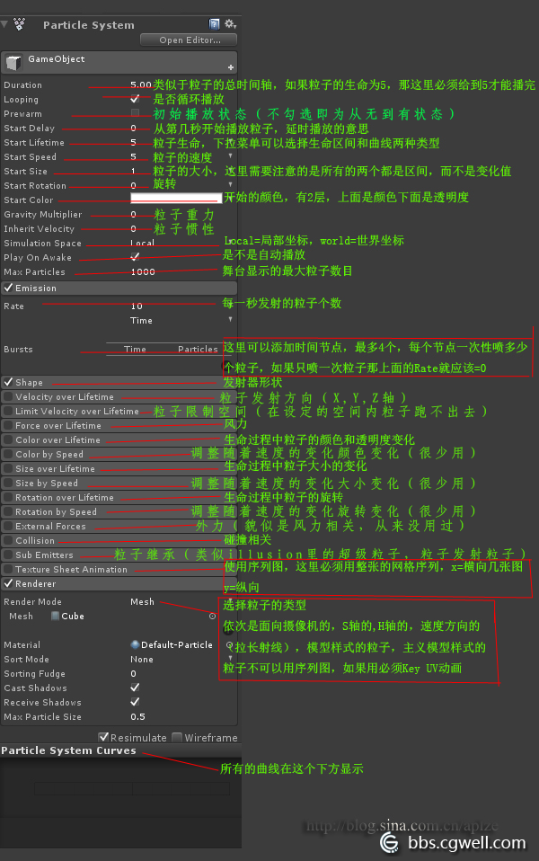
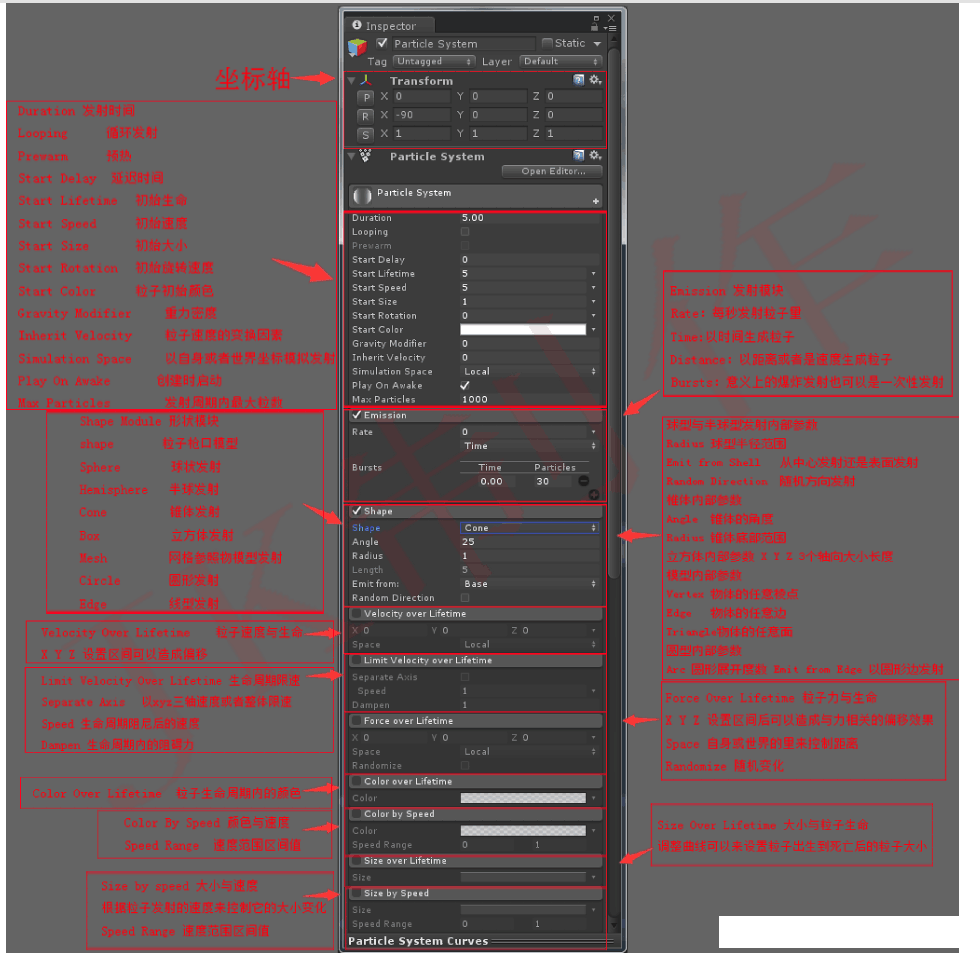
unity 粒子系统面板参数释义
第一个模块Particle System：
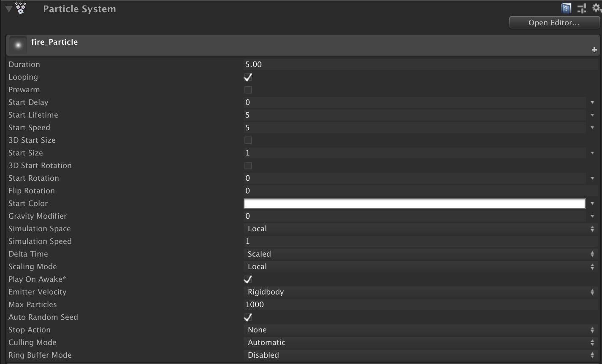
第二个模块Emission（发射模块）：
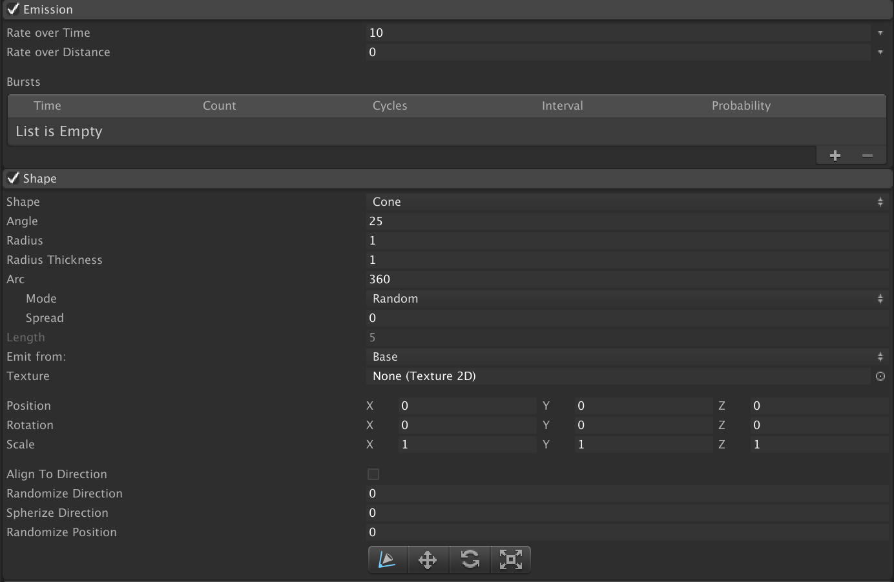
Rate over Time（随时间的速率），每单位时间发射的粒子数量；
Rate over Distance（通过距离的速率），每单位距离发射的粒子数量；
Burst（爆发），产生粒子爆发的效果，通过Time（时间）、Count（数量）、Cycles（周期）、Interval（间隔）四个参数调整。
第三个模块Shape（形状模块）：
控制粒子的发射形状，默认是Cone（锥形），有多种形状可选，在这里不再赘述。
第四个模块Velocity over Lifetime（生命周期中的速度模块）：
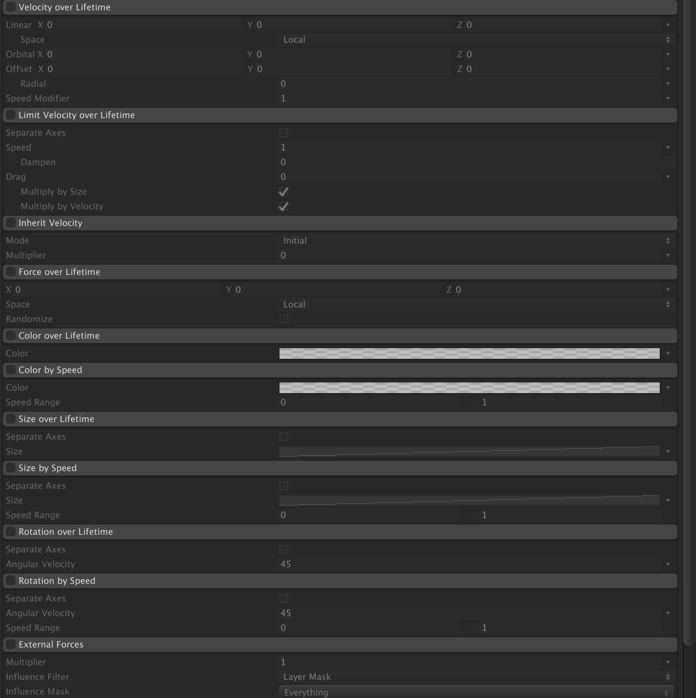
X，Y，Z：分别控制三个轴方向上的速度，可以创建出向特定方向漂移的粒子。
Space（空间）：确定是本地的轴还是世界空间中的轴。
Speed Modifier（速度调节器）：延粒子的当前前进方向对粒子的速度应用乘数。
第五个模块Limit Velocity over Lifetime（限制生命周期中的速度模块）：
Separate Axes（分开轴）：将每个轴分为独立的组件。
Speed（速度）：设置粒子的速度限制。
Dampen（限制）：超过速度限制时，粒子速度降低的部分。
Drag（拖拽）：应用于粒子速度的线性阻力。
Multiply by Size（乘以尺寸）：启用后，较大的粒子受到阻力系数的影响越大。
Multiply by Velocity（乘以速度）：启用后，较快的粒子受到阻力系数的影响越大。
这个模块用于模拟减缓粒子的空气阻力是非常有用的。特别是当降低曲线用于降低速度限制时。例如，一场爆炸或烟火最初以极快的速度爆发，但粒子因空气阻力而迅速减速。
第六个模块Inherit Velocity（继承速度模块）：
Mode（模式）：指定发射器速度应用于粒子的方式。Current（当前）时发射器当前的速度将应用于每一帧的所有粒子。如果发射器加速或减速，所有的粒子都会加速或减速。Initial（初始）时每个粒子诞生时施加一次发射器的速度，之后发射器的速度将不会影响粒子。
Multiplier（乘数）：粒子应继承的发射器的速度比例。
这种效果对于从移动物体发射粒子非常有用，例如来自汽车的尘埃，来自火箭的烟雾，来自蒸汽火车烟囱的蒸汽，或者粒子最初应以速度的百分比移动的任何情况。当主模块中的Space设置为World时，该模块仅对粒子有影响。
第七个模块Force over Lifetime（生命周期中的力模块）：
X、Y、Z：对每个粒子施加在三个轴上的力。
Space（空间）：选择力是在本地还是世界空间中应用。
Randomize（随机化）：随机力的方向，会导致更不稳定的运动。
流体在移动时常常受到力的影响。例如，烟雾从周围的热空气中升起，会稍微加速。
第八个模块Color over Lifetime（生命周期中的颜色模块）：
color（颜色）：粒子在整个生命周期中的颜色梯度。梯度条最左边的点表示粒子寿命的开始，梯度条的右侧表示粒子寿命的结束。
许多类型的自然和幻想粒子随着时间的推移颜色不同，因此这种属性有很多的用途。例如，发光的烟火在穿越空气时会冷却，而魔法可能会爆发出彩虹般的色彩。同样重要的是alpha（透明度）的变化。当粒子的寿命结束时（如烟花、火花和烟雾颗粒），它们的褪色或消散都是非常普遍的，而渐变非常适合应用于这些场景。
第九个模块Color by Speed（速度颜色模块）：
Color（颜色）：定义在速度范围内的粒子颜色梯度。
Speed Range（速度范围）：颜色梯度映射到速度范围的最低端和最高端（速度范围外的将被映射到端点）。
燃烧时发出的微粒（如火花）在空气中快速移动时会更明亮地燃烧（暴露在更多空气中），但随着速度变慢，会稍微变暗。该模块可以用来模拟这个效果。
第十个模块Size over Lifetime（根据生命周期的尺寸模块）：
Separate Axes（分开轴）：单独控制每个轴。
Size（尺寸）：定义粒子尺寸在其寿命期间如何变化的曲线。
一些粒子在离开发射点时会典型地改变尺寸，例如气体、火焰或烟雾颗粒。你可以通过改变粒子的曲线来实现这一点。对于通过燃烧燃料产生的火球，火焰粒子在排放后会趋于膨胀，但随着燃料用尽和火焰消散会收缩。在这种情况下，曲线会有一个上升的“驼峰”，然后回落到一个较小的尺寸。
第十二个模块Size by Speed（根据速度的尺寸模块）：
类似于Size over Lifetime和Color by Speed，不再赘述。
第十三个模块Rotation over Lifetime（根据生命周期的旋转模块）：
第十四个模块Rotation by Speed（根据速度的旋转模块）：
何之前几个模块类似，不再赘述。
第十五个模块External Forces（外部力量模块）：
Multiplier（乘数）：适用于风区（wind zone）力的比例值。
地形可以包含影响树木在景观上移动的风区。启用此部分可以让风区从系统中吹出粒子。Multiplier（乘数）可以让你缩放风对粒子的影响，因为它们通常受到的风力比树枝更强。
第十六个模块Noise（杂波模块）：
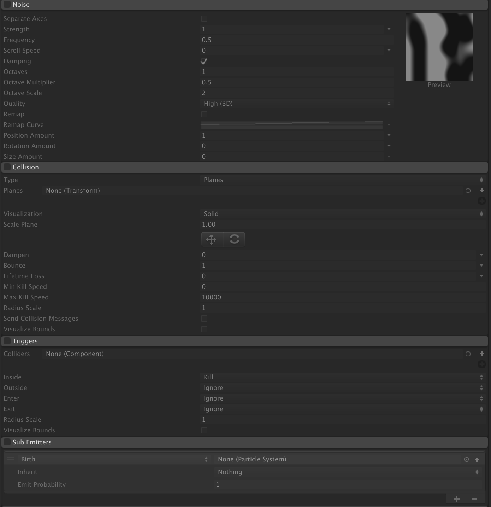
使用此模块添加湍流粒子运动。
参数相对复杂，详解见Unity文档。
第十七个模块Collision（碰撞模块）：
该模块控制粒子如何在场景中与GameObjects相碰撞。 使用第一个下拉菜单来定义你的碰撞设置是否适用于plane（平面）或World（世界） 。 如果选择World，则使用“ 碰撞模式”下拉菜单来定义碰撞设置是适用于2D还是3D世界。
- 平面模块：
Planes popup（平面弹出菜单） 选择Plane模式。
Planes（平面） 一个可扩展的定义碰撞平面的变换列表。
Visualization（可视化） 选择碰撞平面线框是否以场景视图显示为线框网格或实体平面。
Scale Plane（平面缩放） 用于可视化的平面尺寸。
Dampen（损伤） 碰撞后丢失的粒子速度的一部分。
Bounce（弹跳） 碰撞后从表面反弹的粒子速度的一部分。
Lifetime Loss（生命周期损失） 它碰撞时丢失的粒子总寿命的一部分。
Min Kill Speed（最小消失速度） 碰撞后低于此速度的粒子将从系统中移除。
Max Kill Speed（最大消失速度） 碰撞后超过这个速度的粒子将从系统中移除。
Radius Scale（半径缩放） 允许您调整粒子碰撞球体的半径，使其更贴近粒子图形的视觉边缘。
Send Collision Messages（发送碰撞消息） 如果启用，则可以通过OnParticleCollision函数从脚本中检测粒子碰撞。
Visualize Bounds（可视化边界） 在“场景”视图中将每个粒子的碰撞范围渲染为线框形状。
- 世界模块：
World popup（世界弹出菜单）
选择世界模式。
Collision Mode（碰撞模式） 3D或2D。
Dampen（损伤） 碰撞后丢失的粒子速度的一小部分。
Bounce（弹跳） 碰撞后从表面反弹的粒子速度的一部分。
Lifetime Loss（生命周期损失） 它碰撞时丢失的粒子总寿命的一部分。
Min Kill Speed（最小消失速度） 碰撞后低于此速度的粒子将从系统中移除。
Max Kill Speed（最大消失速度） 碰撞后超过这个速度的粒子将从系统中移除。
Radius Scale（半径缩放） 设置2D或3D。
Collision Quality（碰撞质量） 使用下拉菜单来设置粒子碰撞的质量。 这影响有多少粒子可以通过对撞机。 质量较低时，粒子有时会穿过对撞机，但资源密集度较低。
High
当“ 碰撞质量”设置为“ 高”时 ，碰撞总是使用物理系统来检测碰撞结果。 这是最资源密集的选择，也是最准确的。
Medium (Static Colliders) 当“ 碰撞质量”设置为“ 中等”（静态碰撞体）时 ，碰撞使用体素网格来缓存先前的碰撞，以便在以后的帧中更快地重复使用。 请参阅下面的“ 世界冲突” ，了解有关此缓存的更多信息。
“ 中”与“ 低 ”的唯一区别是“粒子系统”每帧查询物理系统的次数。 中等每帧的查询次数比低 。
请注意，此设置仅适用于永不移动的静态对撞机。
Low (Static Colliders) 当“ 碰撞质量”设置为“ 低”（静态碰撞体）时 ，碰撞使用体素网格来缓存先前的碰撞，以便在以后的帧中更快地重复使用。 请参阅下面的“ 世界冲突” ，了解有关此缓存的更多信息。
“ 中”与“ 低 ”的唯一区别是“粒子系统”每帧查询物理系统的次数。 中等每帧的查询次数比低 。
请注意，此设置仅适用于永不移动的静态对撞机。
Collision（碰撞） 粒子只会碰撞选定图层上的物体。
Max Collision Shapes（最大碰撞形状） 粒子碰撞可以考虑多少个碰撞形状。 过多的形状被忽略，地形优先。
Enable Dynamic Colliders（启用动态碰撞器） 允许粒子也与动态对象碰撞（否则只使用静态对象）。
启用动态碰撞器 动态碰撞器是没有配置为运动学的任何碰撞器（关于碰撞器类型的更多信息参见碰撞器文档）。
选中此选项可将这些碰撞器类型包含在碰撞中粒子响应的对象集合中。 取消选中此选项，粒子仅对静态碰撞体发生碰撞。
Voxel Size（体素大小） 体素表示三维空间中规则网格上的值。 当使用中等或低质量冲突时，Unity会缓存网格结构中的冲突。 此设置控制网格大小。 较小的值会提供更高的准确性，但会花费更多的内存，效率也会降低。
注意 ：只有在“ 碰撞质量”设置为“ 中”或“ 低”时才能访问此属性。
Collider Force（对撞机的力） 在粒子碰撞后对物理碰撞体施加一个力。 这对于将碰撞体推向粒子很有用。
Multiply by Collision Angle（乘以碰撞角度） 当对碰撞体施加力时，根据粒子和碰撞体之间的碰撞角度来缩放力的强度。 掠射角比正面碰撞产生的力更小。
Multiply by Particle Speed（乘以粒子速度） 当对碰撞体施加力时，根据粒子的速度来缩放力的强度。 快速移动的粒子比慢速粒子产生更多的力。
Multiply by Particle Size（乘以粒子尺寸） 当对碰撞体施加力时，根据粒子的大小缩放力的强度。 较大的粒子会比较小的粒子产生更大的作用力。
Send Collision Messages（发送碰撞消息） 选中此项即可通过OnParticleCollision函数检测脚本中的粒子碰撞。
Visualize Bounds（可视化边界） 在“场景”视图中预览每个粒子的碰撞球体。
细节
当其他物体包围粒子系统时，粒子与这些物体相互作用时，效果通常会更有说服力。 例如，水或碎片应该被坚实的墙壁阻挡，而不是简单地通过它。 启用“ 碰撞”模块后，粒子可能会与场景中的对象发生碰撞。
可以设置粒子系统，使其粒子通过从弹出窗口中选择世界模式与场景中的任何碰撞器相撞。 也可以通过使用Collides With属性根据其所在图层禁用Colliders。 弹出窗口还有一个“平面”模式选项，它允许您将一组平面添加到不需要碰撞器的场景中。 这个选项对于简单的地板，墙壁和类似的物体是有用的，并且比世界模式有更低的处理器开销。
当Planes模式启用时，可以通过Planes属性添加变换列表（通常为空的GameObjects）。 平面在物体的局部XZ平面内无限延伸，正Y轴表示平面的法向矢量。 为了协助发展，飞机将在场景中显示为小玩意儿，而不管物体是否具有任何可见的网格物体。 Gizmos可以显示为线框网格或实体平面，也可以缩放。 但是，缩放比例仅适用于可视化 - 碰撞平面本身通过场景无限延伸。
当碰撞被启用时，粒子的大小有时是一个问题，因为它的图形可以被剪切，因为它与一个表面接触。 这可能导致粒子在停止或弹跳之前出现在表面“下沉”。 “ 半径比例”属性通过为粒子定义一个近似的圆形半径来解决此问题，以其实际大小的百分比表示。 这个大小的信息是用来防止削减和避免陷入效应。
Dampen和Bounce属性对于粒子表示固体对象时非常有用。 例如，砾石在抛出时倾向于从坚硬的表面反弹，但是在碰撞期间，雪球的颗粒可能会失去速度。 终生损失和最小杀伤速度可以帮助减少碰撞后残留颗粒的影响。 例如，火球在空中飞行时可能会持续几秒钟，但碰撞后，单独的火焰微粒应该迅速消散。
如果启用“ 发送碰撞消息”，您还可以检测脚本中的粒子碰撞。 可以将脚本附加到具有粒子系统的对象，也可以附加到具有对撞机的对象，或者两者兼有。 通过检测碰撞，你可以在游戏中使用粒子作为主动对象，例如投射物，魔法和能量提升。 有关更多详细信息和示例，请参阅MonoBehaviour.OnParticleCollision的脚本参考页面。
世界碰撞质量
“世界碰撞”模块具有“ 碰撞质量”属性，您可以将其设置为“ 高” ，“ 中”或“ 低” 。 当“ 碰撞质量”设置为“ 中等”（静态碰撞体）或“ 低”（静态碰撞体）时 ，碰撞使用体素网格（3D网格上的值）来缓存先前的碰撞，以便在之后的帧中快速重用。
该高速缓存由每个体素中的平面组成，其中平面表示该位置处的碰撞表面。 在每个帧上，Unity会检查缓存中粒子位置的平面，如果有的话，Unity会将其用于碰撞检测。 否则，它会问物理系统。 如果返回冲突，则将其添加到缓存中，以便在后续帧上进行快速查询。
这是一个近似值，所以可能会发生一些错过的碰撞。 您可以减小体素大小值来帮助解决这个问题。 但是，这样做会使用额外的内存，效率会降低。
“ 中”与“ 低 ”的唯一区别是系统允许查询物理系统的每帧数量。 Low使每帧的查询次数少于Medium。 一旦超过每帧预算，只有高速缓存被用于任何剩余的粒子。 这可能会导致错过的冲突增加，直到缓存更加全面地填充。
第十八个模块Triggers（触发器模块）：
当粒子系统与场景中的一个或多个Colliders交互时，它们就能够触发回调。 当粒子进入或离开对撞机时，或粒子在对撞机内部或外部的时间内，可以触发回叫。
您可以使用回调作为一个简单的方法，当它进入对撞机时（例如，为了防止雨滴穿透屋顶）破坏粒子，或者它可以用来修改任何或所有粒子的属性。
“触发器”模块还提供“ Kill”选项以自动删除粒子，“Ignore”选项可忽略碰撞事件，如下所示。
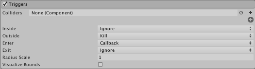
要使用该模块，首先添加您希望创建触发器的碰撞器，然后选择要使用的事件。
你可以选择触发一个事件，每当粒子是：
在对撞机的边界内
在对撞机的边界之外
进入对撞机的界限
退出对撞机的界限
这里类似于其他触发器的设置。不再赘述。
第十九个模块Sub Emitters（子发射器模块）：
让粒子系统拥有自己的子发射器，用来实现类似复杂烟花的效果。
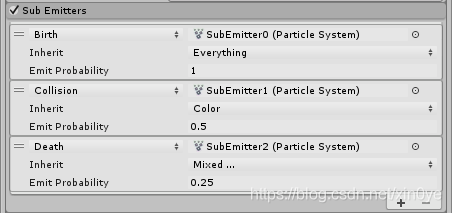
第二十个模块Texture Sheet Animation（纹理图表动画模块）：
网格模式属性：
精灵模式属性：
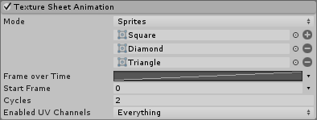
粒子动画通常比字符动画更简单，更细致。 在粒子单独可见的系统中，可以使用动画来传达动作或运动。 例如，火焰可能会闪烁，虫群中的昆虫可能会像扑翼一样震动或颤抖。 在粒子形成像云这样的单一连续实体的情况下，动画粒子可以帮助增加能量和运动的印象。
您可以使用单排模式为粒子创建单独的动画序列，并在脚本之间切换动画。 这对于创建变体或在碰撞后切换到不同的动画可能很有用。 随机行选项非常有效，可以打破粒子系统中显着的规律性（例如，一组重复完全相同的闪烁动画的火焰对象）。 该选项也可以用于每行单个帧，以生成随机图形的粒子。 这可以用来打破像云这样的对象的规则性，或者从单个系统产生不同类型的碎片或其他对象。 例如，bl might可能会发射一堆钉子，螺栓，球和其他抛射物，或者撞车的效果可能会导致弹簧，汽车油漆，螺钉和其他金属碎屑的排放。
UV翻转是为您的效果添加更多视觉效果的好方法，无需编写额外的纹理。
从“Mode”下拉列表中选择“ Sprites”选项，可以定义每个粒子显示的精灵列表，而不是在纹理上使用常规网格。 使用这种模式，您可以利用Sprite的许多功能，如Sprite Packer，自定义枢轴和每个Sprite框架的不同大小。 Sprite Packer可以帮助您在不同的粒子系统之间共享材质，通过纹理的贴图，反过来可以通过动态分批提高性能。 使用此模式需要注意一些限制。 最重要的是，所有连接到粒子系统的精灵必须共享相同的纹理。 这可以通过使用多模式Sprite或使用Sprite Packer来实现。 如果为每个Sprite使用自定义轴心点，请注意，不能在它们的框架之间进行混合，因为每个框架之间的几何图形会有所不同。 只支持简单的精灵，而不是9片。 另外请注意，Mesh粒子不支持自定义枢轴或变化的Sprite大小。
第二十一个模块Lights（光源模块）：
使用此模块将实时光源添加到一定比例的粒子中。
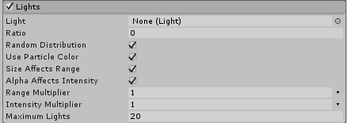
Lights模块是一种快速添加实时灯光效果的方法。 它可以用来使系统投射到周围环境，例如火灾，烟火或闪电。 它也允许你让灯继承它们附着的粒子的各种属性。 这可以使粒子效应本身发光的可信度更高。 例如，这可以通过使光线与其颗粒淡出并使它们共享相同的颜色来实现。
这个模块使得很容易快速地创建大量的实时灯，而且实时灯具有高性能成本，尤其是在正向渲染模式下。 如果灯光也投下阴影，性能成本更高。 为了防止对排放速率的意外调整，从而导致创建数千个实时灯，应使用Maximum Lights属性。 创建比目标硬件能够管理更多的灯光可能会导致速度变慢和无响应。
第二十二个模块Trails（轨迹模块）：
粒子模式：
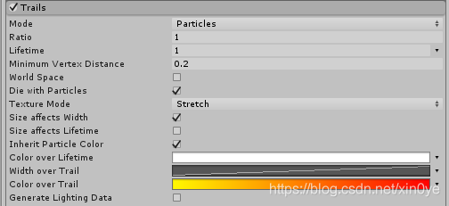
功能区模式：
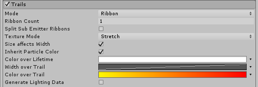
详细选项类似前几个模块。使用该模块能够轻松实现子弹等效果。
第二十三个模块Custom Data（自定义数据模块）：
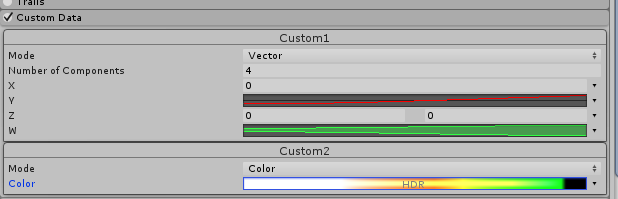
“自定义数据”模块允许您在编辑器中定义自定义数据格式以附加到粒子。 你也可以在脚本中设置它。 有关如何从脚本设置自定义数据并将该数据提供给着色器的更多信息，请参阅粒子系统顶点流的文档。
数据可以采用Vector的形式，最多可包含4个MinMaxCurve组件，或者Color ，这是一个支持HDR的MinMaxGradient 。 使用此数据驱动脚本和着色器中的自定义逻辑。
每个曲线/渐变的默认标签可以通过点击它们并输入上下文名称来定制。 将自定义数据传递给着色器时，了解在着色器内如何使用这些数据很有用。 例如，曲线可以用于自定义alpha测试，或者可以使用梯度向粒子添加第二颜色。 通过编辑标签，能够轻易地在用户界面中记录每个自定义数据。
第二十四个模块Renderer（渲染器模块）：
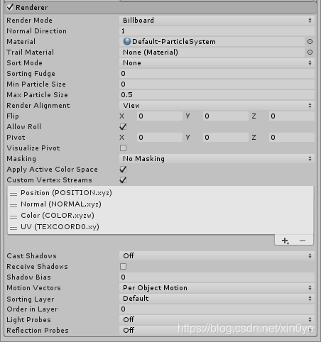
Render Mode让您选择几个二维广告牌图形模式和网格模式。 使用三维网格物体，当它们代表坚固的GameObjects（如岩石）时，会给予粒子更多的真实性，并且还可以提高云，火球和液体的体积感。 当使用2D Billboard图形时，不同的选项可以用于各种效果。
Billboard Mode适用于表示从任何方向（如云）看起来都相同的粒子。
Horizontal Billboard模式可以在粒子覆盖地面时使用（例如目标指示符和魔法效果），或者当它们是平面飞行或平行于地面浮动的平面物体（例如，手枪）。
Vertical Billboard模式保持每个粒子直立和垂直于XZ平面，但允许它围绕其y轴旋转。 当使用正交相机时，这可能会有所帮助，并希望粒径保持一致。
Stretched Billboard模式突出显示了粒子的速度，类似于传统动画设备使用的“拉伸和压扁”技术。 请注意，在“Stretched Billboard”模式下，粒子会对齐到面向相机，并与其速度对齐。 无论速度比例值如何，这种对齐都会发生 - 即使“速度比例”设置为0，此模式下的粒子仍会与速度对齐。